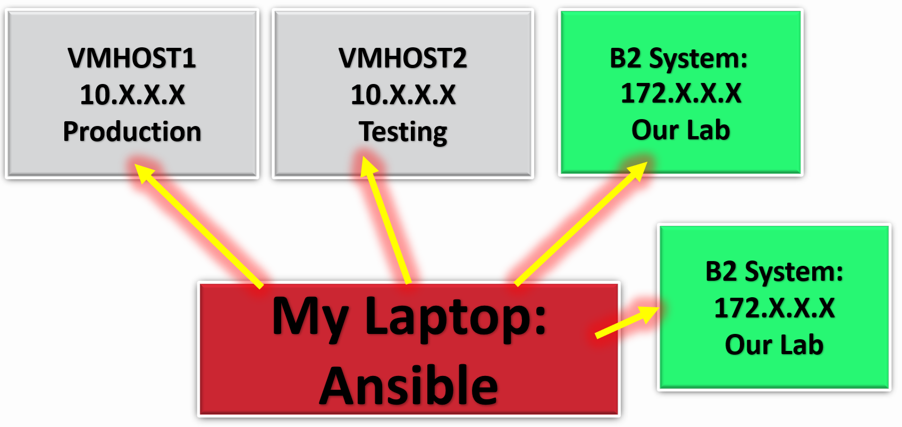
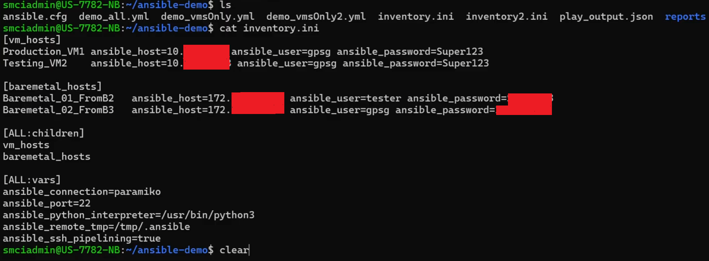
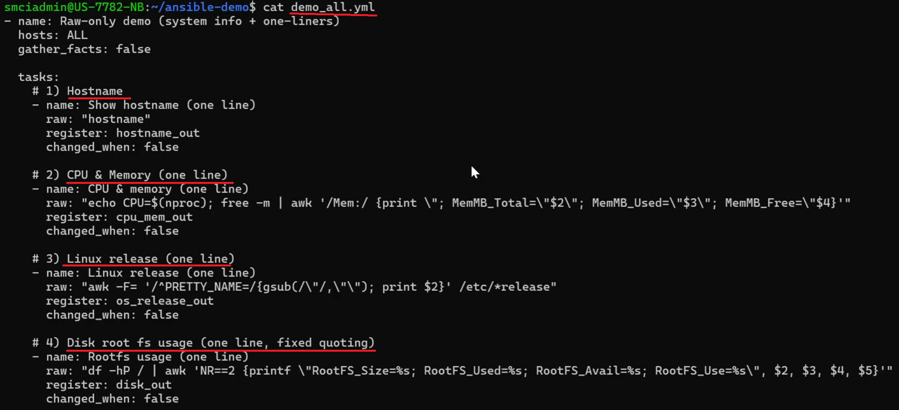
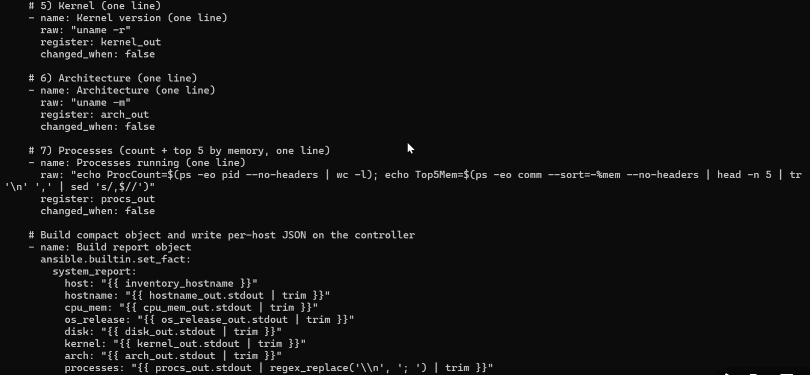
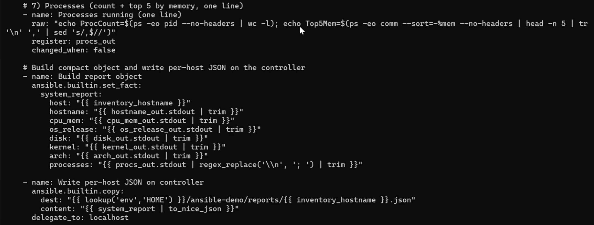
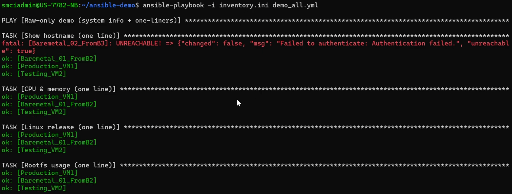
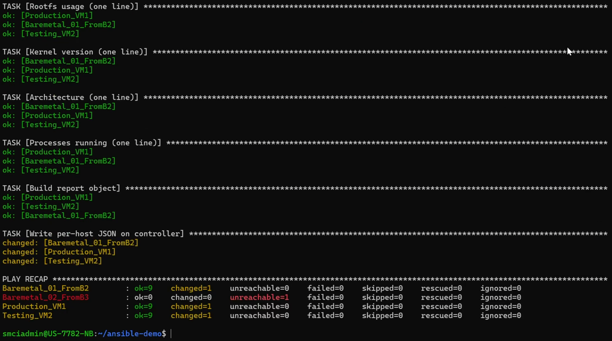
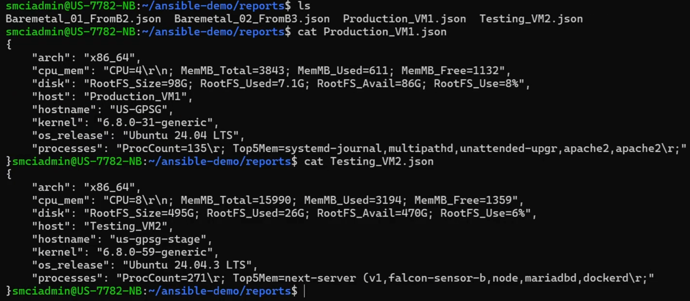

Ansible Metadata Collector

As a System Engineer working for Supermicro, I was tasked to collect metadata from 80 nodes of a cluster, using Ansible. The majority were just baremetals, but 25% or so had VMs. I collected the metadata from VMs as well.
The metadata I was tasked to collect was the following:
1- Architecture (such as x86_64 or ARM)
2- CPU Memory (used and available)
3- Disk Memory (used and available)
4- Host
5- Hostname
6- Kernel
7- OS Release
8- Processes.
However, for this portfolio website, I will only show Ansible with 4 of the 80 nodes I worked with due to security reasons. Here's the Ansible Inventory:

And this is the playbook used:


The playbook specifies output location:

Now we run the playbook. But keep in mind that at around the time this was made, the credentials for one of the hosts changed. One will fail. But that is fine, because it shows its working as intended:


Here's the metadata that gets saved per Baremetal / VM:

That's it! Thanks for reading!